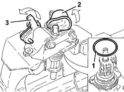
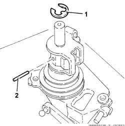
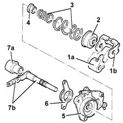
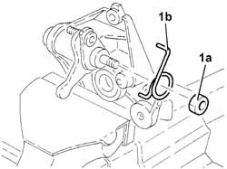
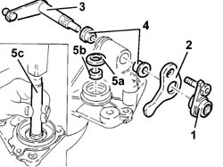
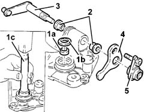
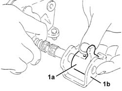

2110C54 Gear selector and engagement UNIT - Overhaul with unit removed
- Path
- Procedures > 21 GEARBOX > 2110 MANUAL GEARBOX AND DIFFERENTIAL > 2110C MANUAL GEARBOX AND DIFFERENTIAL COVERS AND GEARBOX CASINGS > 2110C54 Gear selector and engagement UNIT - Overhaul with unit removed
- Kind
- repair procedure (removal / refitting; the operation number is the code)
- Applies to
- engines: 2.0 TB, 2.4 20V, 2.4 JTD 10V, 2.4 JTD 20V; all production periods
- Interactive page
- https://sloeber94.github.io/elrnDB-lThss/en/#/78186
Applies to: engines: 2.0 TB, 2.4 20V, 2.4 JTD 10V, 2.4 JTD 20V; all production periods
 Removing
Removing
 Refitting
Refitting1. Remove the O-ring.
- Position the gear selector and engagement unit in a vice fitted with protective jaws.
2. Lift up the rubber protection.
3. Lift up the pawl to release it from the control shaft.
- Remove the gear selector and engagement unit from the vice.

Applies to: engines: 2.0 TB, 2.4 20V, 2.4 JTD 10V, 2.4 JTD 20V; all production periods
1. Remove the retaining seal.
2. Remove the pin.

Applies to: engines: 2.0 TB, 2.4 20V, 2.4 JTD 10V, 2.4 JTD 20V; all production periods
1. Remove the pawl (1a) and the bracket (1b).
2. Remove the cover.
3. Remove the springs.
4. Remove the bush.
5. Remove the mounting.
6. Remove the flange.
7. Separate the rubber protection (7a) from the control shaft (7b).

Applies to: engines: 2.0 TB, 2.4 20V, 2.4 JTD 10V, 2.4 JTD 20V; all production periods
- Position the support in a vice fitted with protective jaws.
1. Undo the nut (1a) and remove the spring (1b).
- Remove the support from the vice.

Applies to: engines: 2.0 TB, 2.4 20V, 2.4 JTD 10V, 2.4 JTD 20V; all production periods
1. Remove the bush.
2. Remove the pawl.
3. Remove the lever.
4. Release the two bushes.
5. Remove the seal (5a) and the bush (5b) using a suitable tool (5c).

Applies to: engines: 2.0 TB, 2.4 20V, 2.4 JTD 10V, 2.4 JTD 20V; all production periods
Refitting
Removing1. Fit the bush (1a) and the seal (1b) using a suitable tool (1c).
2. Fit the two bushes.
3. Fit the lever.
4. Fit the pawl.
5. Fit the bush.

Applies to: engines: 2.0 TB, 2.4 20V, 2.4 JTD 10V, 2.4 JTD 20V; all production periods
- Position the support in a vice fitted with protective jaws.
- Fit the spring and tighten the nut.
- Remove the support from the vice.
- Fit the rubber protection on the control shaft.
- Fit the flange.
- Fit the mounting.
- Fit the bush.
- Fit the springs.
- Fit the cover.
1. Fit the pawl (1a) and the support (1b) as illustrated in the diagram.

Applies to: engines: 2.0 TB, 2.4 20V, 2.4 JTD 10V, 2.4 JTD 20V; all production periods
- Fit the pin.
- Fit the circlip.
- Fit the gear selector and engagement unit in a vice fitted with protective jaws.
- Connect the pawl to the control shaft.
- Fit the rubber protection.
- Remove the gear selector and engagement unit from the vice.
- Fit a new O-Ring.